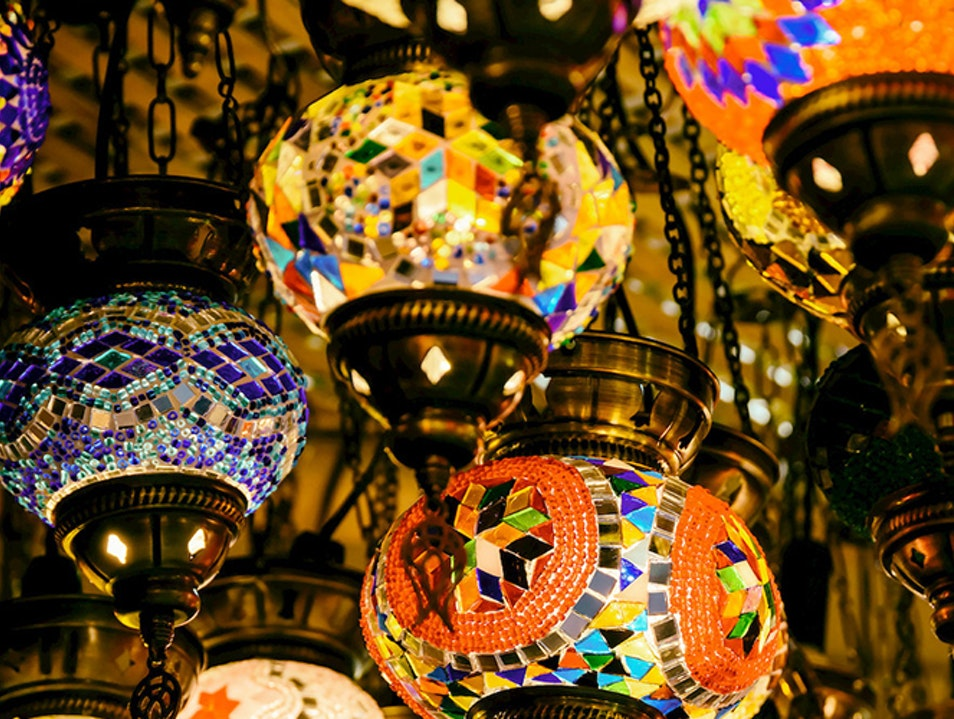
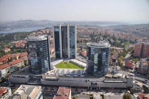
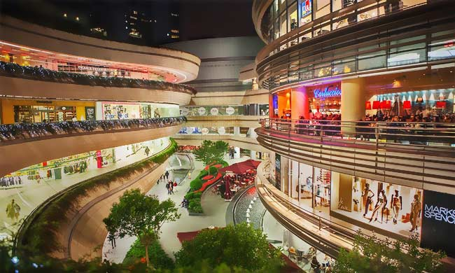
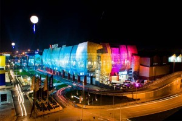
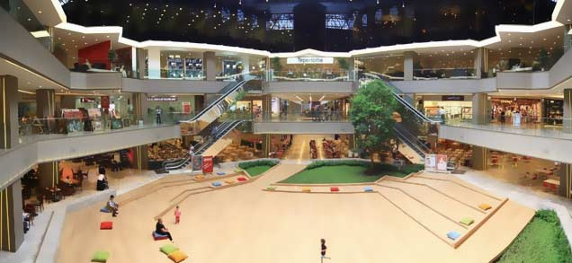

Where to shop in Istanbul?
Grand Bazaar
Soon after conquering Constantinople and defeating the Byzantines in 1453, Ottoman Sultan Mehmet II commissioned the beginnings of the Grand Bazaar to reinvigorate trade with the city. More than 550 years later, the bazaar is one of the oldest covered markets in the world, with a labyrinth of 60 streets connecting over 3,000 shops selling all manner of treasures and souvenirs, from jewelry to silk carpets. Looking for currency exchange shops? You’ll find the best rates in Istanbul here. 
Istanbul's Grand Bazaar might have become a tourist mecca, but given that it's the world's oldest shopping mall, it's still around for a reason. Locals still work, shop, and play here, and if you're there in the off-season, as we were, you hopefully will get a more authentic grasp of the way this bustling hub of old-world business used to be. I loved watching the employees rush around the huge place with the ubiquitous Turkish apple tea to shop owners and customers in their gorgeous, yet utilitarian, tea caddies. Between the knick-knacks, it's still full of beautiful spices, textiles, and other authentic Turkish goods.
Akmerkez
Akmerkez is located in Etiler, a neighborhood of the Beşiktaş district and one of the favorite areas among Istanbul’s elite. It is also close to the business quarters of Levent and Maslak.
 Akmerkez was chosen the best shopping center in Europe in 1995 by ICSC. In 1996 it was recognized as the best shopping center in the world, moreover it also received the International Design and Development Award. Akmerkez is a unique shopping center, since no other shopping center in the world has both of these titles. In 2010, Akmerkez was awarded with the prize for best interior design by the European Commercial Property Awards.
Istinye Park
Located in the Istinye neighborhood of the Sarıyer district, Istinye Park has brought a new dimension to Istanbul’s shopping concept. Spread out over an area of 242.000 sqm, the shopping center offers a variety of outdoor and glass roofed indoor sections such as a green central park, Fashion District, street side shopping, a kids’ entertainment center of 1.500 sqm, Hillside Sports and Leisure Club, The Bazaar — an area inspired by historical Turkish architecture — and 12 movie halls, one of which being IMAX 3D.
Green, eco-friendly, humane and eye for details is how you can best describe Istinye Park. There are three waste collecting centers and a waste oil collector. Wheelchairs, lockers to leave your valuables, baby buggies free of charge and immediate tax refund are only some of the thoughtful services provided.
Kanyon
 As a four-storey shopping center located in the financial district of Levent, the 37.500 sqm shopping center has 160 stores among which Turkey’s and the world’s most selected brands, gourmet restaurants, cafes, a health and sports club and movie halls.
Kanyon was awarded with the 2006 Cityscape Architectural Review Award in the “Commercial Built” category.
Bağdat Caddesi
 On the Asian side of the city and roughly parallel to the shore of the Marmara Sea, Bağdat Avenue is a rather green and glossy 14 km long high street. The first residential steps in the area were the luxurious wooden chalet mansions built after 1870’s. Some still exist and contribute to the wealthy look of the upper-scale residential area. As well as the shopping exuberance, Bağdat Avenue is famous for international and local cuisine restaurants, pubs and cafes.
On the Asian side of the city and roughly parallel to the shore of the Marmara Sea, Bağdat Avenue is a rather green and glossy 14 km long high street. The first residential steps in the area were the luxurious wooden chalet mansions built after 1870’s. Some still exist and contribute to the wealthy look of the upper-scale residential area. As well as the shopping exuberance, Bağdat Avenue is famous for international and local cuisine restaurants, pubs and cafes.
Bagdat Avenue scored 83 out of 100 and became 4th (!) on a ranking list of the world’s most famous shopping streets made by a Paris-based market consulting company in 2012.
Forum Istanbul
 Whatever you may need, you can almost bet on it that you can find it in Forum Istanbul. The shopping center made its debut in 2009 and is built on an enormous area of 495.000 sq meters. About 8.000 sq meters of it is occupied by Turkey’s first gigantic aquarium Turkuazoo and the first ice museum, Magic Ice.
The rest is shared among big stores like IKEA, the sports store Decathlon, Praktiker, several technology stores, 62 domestic and international clothing and shoe stores, 15 cafes, 34 restaurants and 10 movie halls.
Galleria
 You have just left the airport upon arrival and there is an emergency. You need to do some shopping! Tell your taxi driver to take the seaside road because the place to be is Galleria, the very first shopping center in Istanbul.
In the 80’s Turkey faced a lot of social changes. The mastermind was the innovative Prime Minister Turgut Özal who recommended building such a shopping center since he was inspired by the shopping mall Houston Galleria in Houston, Texas, USA. Located on the seaside of the Ataköy suburb, Galleria was built on a covered area of 77.000 sq meters.